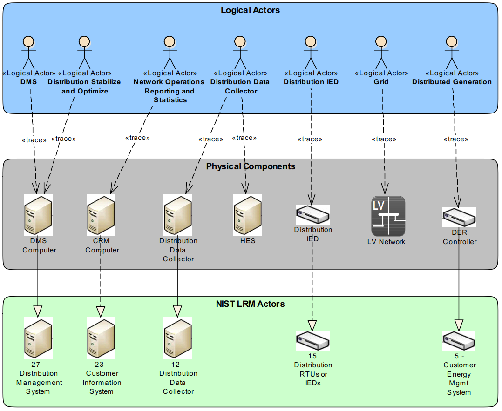
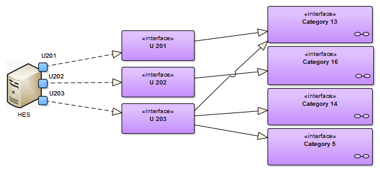

Model Transformation
Right after the functional specification within the upper two layers of the SGAM, the architectural development can take place. The first step is to map the Logical Actors from the SGAM Function Layer onto Physical Components ("Model Transformation"). The identified components can be related with actors from the NIST LRM. Thus, appropriate interfaces together with their associated security requirements can be obtained. Figure 1 depicts this mapping for the given example.

Figure 1. Mapping of Logical Actors onto physical components.
As one can see in the figure, the mapping is not necessarily a one-to-one mapping. Rather, one single LA (as for example "Distribution Data Collector") can be realized as combination of multiple physical devices ("Distribution Data Collector" and "Head End System", HES). Vice versa, it is also possible for one physical component to realize the functionality of different Logical Actors (e.g., the "DMS Computer" realizes the LAs "DMS" and "Distribution Stabilize and Optimize").
Another very important aspect that can be seen is that not for every physical component a suitable reference can be found within the NIST LRM. In the given example, this pertains for the Head End System. In that case, two aspects can be considered. First, the planned solution is not conform to the NIST LRM and maybe could be reconsidered. Or, the questioned component needs to be added individually. As the development of the Smart Grid typically is no green field approach, the second scenario is more common. In the example given the HES should be integrated manually to demonstrate how to individually extend the NIST LRM. A special focus here is put on maintaining the security concepts introduced by the NIST LRM.
When introducing a new component it is necessary to identify and describe the interfaces with surrounding components. In the given example, the HES will be interfacing with three components (DDC, DMS and DER). Thus, the three interfaces U201, U202 and U203 are created and instantiated for the HES. Furthermore, each of these interfaces is considered in respect to the available interface categories discussed in Section NIST LRM. After the appropriate interface categories have been identified, the interfaces can be related with them. Doing so provides a direct link between the newly created component and the associated security requirements delivered by the NIST LRM. Figure 2 depicts the creation of Interfaces and their relation with particular Interface Categories for the newly created component HES.

Figure 2. Integration of interfaces for a new component.
Due to their huge number the security requirements associated with every
Interface Category are not included in the image. To brows through the corresponding requirements, the online available click-through model
sgam-toolbox.org/NISTLRM can be consulted.
However, the associated security requirements provided by the NIST LRM are developed "bottom up" and intended to be High Level Security Requirements. Thus, they rather serve as starting point and need further particularization. The necessary refinement can be done on basis of the "top down" requirements developed so far in the preliminary steps. This concept fosters the combination of both, a top down and a bottom up approach which is a very common way for developing security requirements.